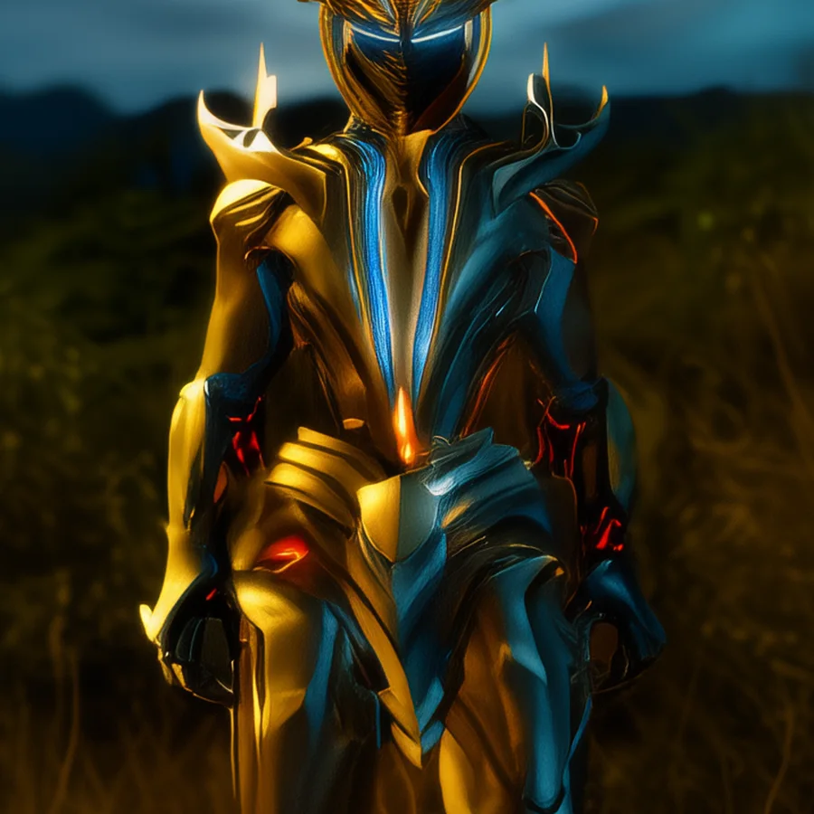
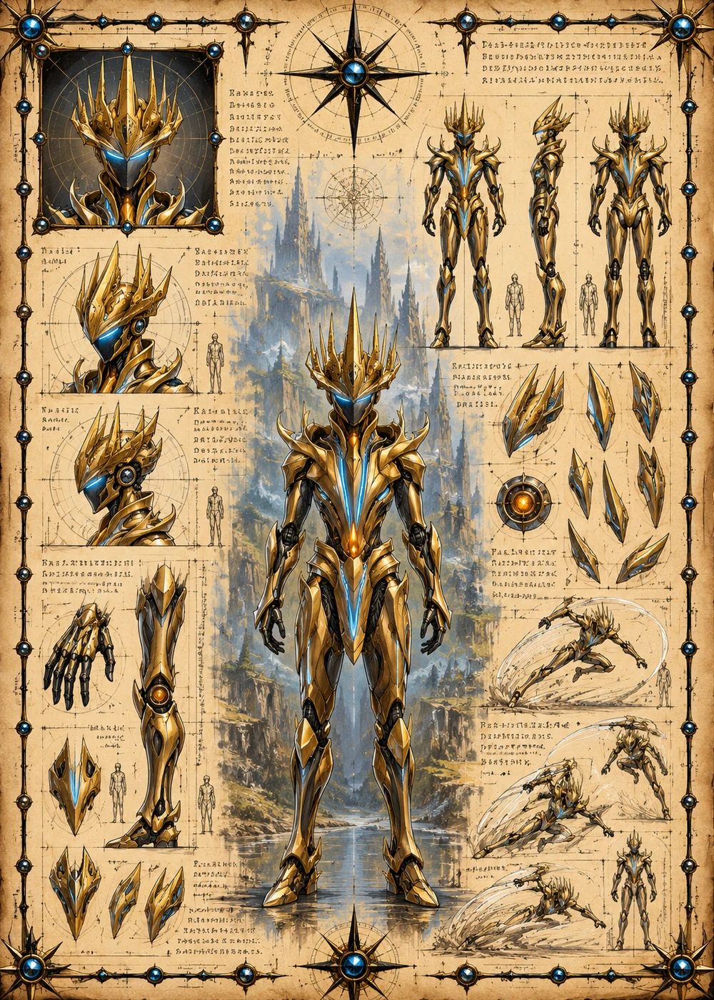

©
©
GENEZYS ARCHIVE · Earth 1 · Legionnaire
Quenith
Interval Reaper

Archive record
Quenith learned to see the space between two heartbeats, and to cut there. The Moment Slice lands on the flanks before the enemy in the middle even notices its strength is gone. Like every knight of the Exalted Order, Quenith has sworn to guard one Still Hour, and still waits for it to come.
Combat signature
Moment Slice
210 Cosmara
140 Animus
170 Vitalis
Cuts through fabric of duration: Deals 50 pierce damage to enemies on the edges. The enemy in the middle loses 40 Cosmara.
Genezys 03:01 ™&©2026LEGIONS
